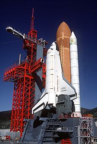

| Космическа совалка | |
|---|---|
|  | |
| Данни за кораба | |
| Функция | Пилотиран космически кораб за извеждане на товари в Космоса, ремонти на космически апарати и връщане на космически апарати и техника на Земята |
| Тип | пилотиран |
| Производител | United Space Alliance |
| Страна | САЩ |
| Размери | |
| Височина | 17,25 метра |
| Дължина | 37,24 метра |
| Маса при излитане |
109 000 кг |
Космическата совалка (на английски: Space Shuttle, Спейс Шатъл) е американски пилотиран космически кораб за многократна употреба. Първият старт на совалката е на 12 април 1981 г., а последният – на 8 юли 2011 г. За този период са осъществени общо 135 космически полета.
Космическите совалки носят космонавти на борда си, както и товари, като изкуствени спътници и части за космическите станции в ниската околоземна орбита, в горната част на атмосферата или термосферата.Обикновено екипажът се състои от 5 до 7 члена. Максималният товар, който може да бъде носен от совалката, е с тегло:
- 22 700 kg до ниска околоземна орбита
- 16 050 kg до Международната космическа станция
- 12 700 kg до полярна орбита
- 3810 kg до геостационарна орбита
- 14 400 kg обратно до Земята
История
Първите космически кораби за многократно използване започват да се разработват на 5 януари 1972 г., когато президентът Ричард Никсън утвърждава програмата „Космическата совалка“ на НАСА. Силна поддръжка на програмата оказва Роналд Рейгън, тъй като совалките са ключово звено от програмата му „Звездни войни“.